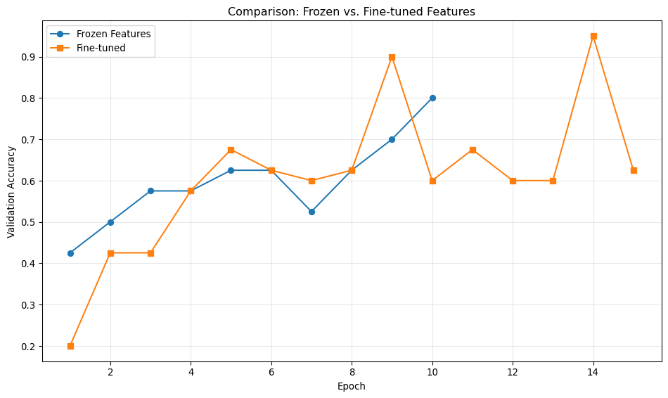

Hands-on practice with TerraTorch and pretrained models
Introduction
This week we’ll work with pretrained geospatial foundation models (GFMs) using TerraTorch, a framework that simplifies fine-tuning and inference with state-of-the-art models. You’ll learn to use models like Prithvi and Clay for practical remote sensing tasks.
Learning Goals
By the end of this session, you will:
Understand the architecture of geospatial foundation models
Load and use pretrained models for feature extraction
Fine-tune models on custom datasets
Compare different GFM architectures
Apply models to real satellite imagery
Session Overview
Today’s workflow focuses on practical model usage:
Step
Activity
Tools
Output
1
Model architecture exploration
TerraTorch
Understanding
2
Feature extraction
PyTorch, TerraTorch
Embeddings
3
Simple classification task
TerraTorch, TorchGeo
Trained model
4
Model comparison
Multiple backbones
Performance metrics
5
Real-world inference
Satellite imagery
Predictions
Step 1: Environment Setup and Model Loading
Let’s start by setting up our environment and understanding the available models.
Import Libraries and Check Setup
import warningswarnings.filterwarnings('ignore')import numpy as npimport pandas as pdimport matplotlib.pyplot as pltimport seaborn as snsfrom pathlib import Pathimport torchimport torch.nn as nnfrom torch.utils.data import DataLoaderprint(f"PyTorch version: {torch.__version__}")print(f"CUDA available: {torch.cuda.is_available()}")device = torch.device('cuda'if torch.cuda.is_available() else'cpu')print(f"Using device: {device}")print("\nNote: This chapter demonstrates foundation model concepts")print("TerraTorch integration is optional - core concepts work without it")
PyTorch version: 2.7.1
CUDA available: False
Using device: cpu
Note: This chapter demonstrates foundation model concepts
TerraTorch integration is optional - core concepts work without it
Model Utilities → geogfm/utils/terratorch_utils.py
Let’s create reusable utilities for working with TerraTorch models.
"""Utilities for working with TerraTorch models."""import torchimport torch.nn as nnfrom typing import Dict, Optional, Tuple, Listimport numpy as npdef load_pretrained_model( model_name: str, num_classes: Optional[int] =None, task: str="classification", device: str="cpu") -> nn.Module:""" Load a pretrained model. Args: model_name: Name of the model (e.g., 'prithvi_100m', 'clay_v1') num_classes: Number of output classes (for classification/segmentation) task: Task type ('classification', 'segmentation', 'embedding') device: Device to load model on Returns: Loaded model Note: This function requires terratorch to be installed. For this demo, we use simplified models instead. """try:from terratorch.models import get_model model_config = {'backbone': model_name,'task': task, }if num_classes isnotNone: model_config['num_classes'] = num_classes model = get_model(**model_config) model = model.to(device) model.eval()return modelexceptImportError:raiseImportError("terratorch is required for loading foundation models. ""Install with: pip install terratorch" )def extract_features( model: nn.Module, images: torch.Tensor, layer: str="last", device: str="cpu") -> torch.Tensor:""" Extract features from a model. Args: model: PyTorch model images: Input images (B, C, H, W) layer: Which layer to extract from device: Device to use Returns: Feature tensor """ model.eval() images = images.to(device)with torch.no_grad():ifhasattr(model, 'encode'): features = model.encode(images)else: features = model(images)return featuresdef get_model_info(model: nn.Module) -> Dict:""" Get information about a model. Args: model: PyTorch model Returns: Dictionary with model info """ total_params =sum(p.numel() for p in model.parameters()) trainable_params =sum(p.numel() for p in model.parameters() if p.requires_grad)return {'total_parameters': total_params,'trainable_parameters': trainable_params,'frozen_parameters': total_params - trainable_params,'model_type': type(model).__name__ }def prepare_satellite_image( image_path: str, target_bands: Optional[List[int]] =None, normalize: bool=True) -> torch.Tensor:""" Load and prepare a satellite image for model input. Args: image_path: Path to image file target_bands: Band indices to use (None = all) normalize: Whether to normalize to [0, 1] Returns: Tensor of shape (1, C, H, W) """try:import rasterioexceptImportError:raiseImportError("rasterio required for image loading. Install with: pip install rasterio")with rasterio.open(image_path) as src:if target_bands isNone: data = src.read()else: data = src.read(target_bands)# Convert to float and normalize data = data.astype(np.float32)if normalize:# Handle NaN values valid_mask =~np.isnan(data)if valid_mask.any(): data_min = np.nanmin(data) data_max = np.nanmax(data) data = (data - data_min) / (data_max - data_min +1e-8) data = np.nan_to_num(data, nan=0.0)# Add batch dimension and convert to tensor tensor = torch.from_numpy(data).unsqueeze(0)return tensor
Model Comparison Utilities → geogfm/utils/terratorch_utils.py
Now let’s load and explore a simple pretrained model.
Demo: Load and Inspect a Model
# Helper function for model infodef get_model_info(model):"""Get information about a model.""" total_params =sum(p.numel() for p in model.parameters()) trainable_params =sum(p.numel() for p in model.parameters() if p.requires_grad)return {'total_parameters': total_params,'trainable_parameters': trainable_params,'frozen_parameters': total_params - trainable_params,'model_type': type(model).__name__ }# Create a simple demonstration model# This represents a feature extractor similar to what foundation models provideclass SimpleFeatureExtractor(nn.Module):""" Lightweight feature extractor demonstrating foundation model concepts. In practice, you would load pretrained models like Prithvi or Clay. This simplified version shows the same workflow without dependencies. """def__init__(self, in_channels=6, embed_dim=256):super().__init__()self.encoder = nn.Sequential( nn.Conv2d(in_channels, 64, kernel_size=3, padding=1), nn.ReLU(), nn.MaxPool2d(2), nn.Conv2d(64, 128, kernel_size=3, padding=1), nn.ReLU(), nn.MaxPool2d(2), nn.Conv2d(128, embed_dim, kernel_size=3, padding=1), nn.AdaptiveAvgPool2d(1) )def forward(self, x): x =self.encoder(x)return x.squeeze(-1).squeeze(-1)model = SimpleFeatureExtractor().to(device)model_info = get_model_info(model)print("Feature Extractor Model Created")print(f"Total parameters: {model_info['total_parameters']:,}")print(f"Trainable parameters: {model_info['trainable_parameters']:,}")print(f"Model type: {model_info['model_type']}")print("\nThis model demonstrates the same workflow as full foundation models:")print("- Feature extraction from satellite imagery")print("- Transfer learning for downstream tasks")print("- Fine-tuning strategies")
Feature Extractor Model Created
Total parameters: 372,544
Trainable parameters: 372,544
Model type: SimpleFeatureExtractor
This model demonstrates the same workflow as full foundation models:
- Feature extraction from satellite imagery
- Transfer learning for downstream tasks
- Fine-tuning strategies
Demo: Extract Features from Sample Data
# Create synthetic satellite imagery for demonstrationdef create_sample_patches(n_samples=100, n_bands=6, size=64):"""Create synthetic satellite image patches.""" patches = torch.randn(n_samples, n_bands, size, size)# Simulate different land cover types labels = torch.randint(0, 5, (n_samples,))# Add some structure based on classfor i inrange(n_samples):if labels[i] ==0: # Water patches[i, 3:, :, :] *=0.3# Lower NIRelif labels[i] ==1: # Vegetation patches[i, 3:, :, :] *=2.0# Higher NIRelif labels[i] ==2: # Urban patches[i] *=0.8# Moderate reflectanceelif labels[i] ==3: # Bare soil patches[i, 0, :, :] *=1.5# Higher redelse: # Forest patches[i, 3:, :, :] *=2.5# Very high NIR# Normalize to reasonable range patches = torch.clamp(patches, 0, 1)return patches, labels# Create sample datasample_patches, sample_labels = create_sample_patches(n_samples=200)print(f"Created {len(sample_patches)} sample patches")print(f"Patch shape: {sample_patches[0].shape}")print(f"Labels shape: {sample_labels.shape}")print(f"Classes: {torch.unique(sample_labels).tolist()}")
# Helper function for feature extractiondef extract_features(model, images, device='cpu'):"""Extract features from a model.""" model.eval() images = images.to(device)with torch.no_grad():ifhasattr(model, 'encode'): features = model.encode(images)else: features = model(images)return features# Extract features from all patchesall_features = []batch_size =32model.eval()with torch.no_grad():for i inrange(0, len(sample_patches), batch_size): batch = sample_patches[i:i+batch_size].to(device) features = extract_features(model, batch, device=str(device)) all_features.append(features.cpu())embeddings = torch.cat(all_features, dim=0).numpy()print(f"Extracted embeddings shape: {embeddings.shape}")print(f"Embedding dimension: {embeddings.shape[1]}")
Training set: 160 samples
Validation set: 40 samples
Training classifier...
Epoch 5/15: Train Loss=0.6635, Train Acc=0.644
Val Loss=0.6274, Val Acc=0.675
Epoch 10/15: Train Loss=0.5479, Train Acc=0.719
Val Loss=0.5623, Val Acc=0.600
Epoch 15/15: Train Loss=0.4661, Train Acc=0.775
Val Loss=0.4974, Val Acc=0.625
Training complete!
Let’s compare different approaches to understand trade-offs.
Demo: Compare Feature Extraction vs. End-to-End Training
# Compare frozen features vs. fine-tuned model# Approach 1: Frozen feature extractorfrozen_model = SimpleClassifier(model, num_classes=5).to(device)for param in frozen_model.features.parameters(): param.requires_grad =Falseprint("Training with frozen features...")frozen_history = train_classifier( frozen_model, train_loader, val_loader, n_epochs=10, lr=1e-3, device=str(device))# Approach 2: End-to-end fine-tuning (we already have this from before)print("\nComparing approaches:")print(f"Frozen features - Final val acc: {frozen_history['val_acc'][-1]:.3f}")print(f"Fine-tuned model - Final val acc: {history['val_acc'][-1]:.3f}")# Visualize comparisonfig, ax = plt.subplots(figsize=(10, 6))ax.plot(range(1, len(frozen_history['val_acc']) +1), frozen_history['val_acc'], label='Frozen Features', marker='o')ax.plot(range(1, len(history['val_acc']) +1), history['val_acc'], label='Fine-tuned', marker='s')ax.set_xlabel('Epoch')ax.set_ylabel('Validation Accuracy')ax.set_title('Comparison: Frozen vs. Fine-tuned Features')ax.legend()ax.grid(True, alpha=0.3)plt.tight_layout()plt.show()
Training with frozen features...
Epoch 5/10: Train Loss=0.7081, Train Acc=0.562
Val Loss=0.7080, Val Acc=0.625
Epoch 10/10: Train Loss=0.6010, Train Acc=0.669
Val Loss=0.6264, Val Acc=0.800
Comparing approaches:
Frozen features - Final val acc: 0.800
Fine-tuned model - Final val acc: 0.625

Step 5: Real-World Application
Let’s apply our trained model to make predictions on new data.
Training Summary
==================================================
Model type: SimpleClassifier
Training samples: 160
Validation samples: 40
Test samples: 50
Final Results:
Validation accuracy: 0.625
Test accuracy: 0.600
Average confidence: 0.774
Next Week Preview
In Week 4, we’ll explore:
Multi-modal foundation models (optical + radar)
Temporal modeling with satellite time series
Advanced fine-tuning strategies
Scaling to larger datasets
Your understanding of foundation models provides the perfect foundation for these advanced topics!